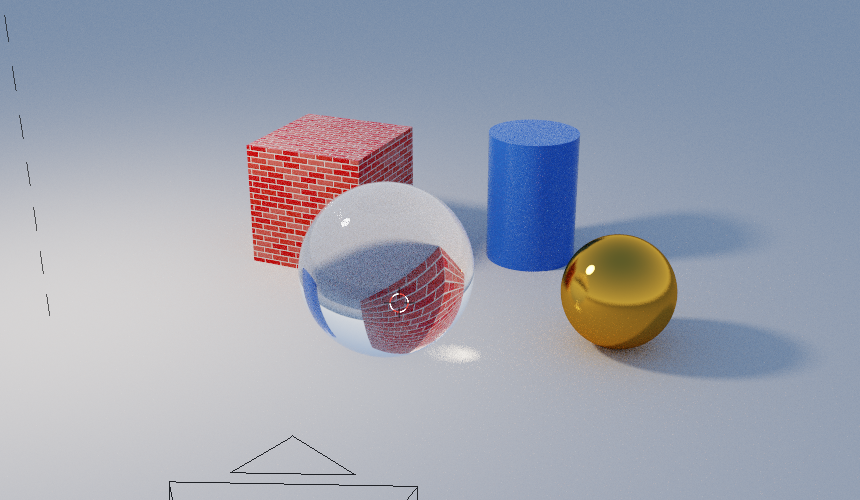

A rendered picture has three sources of light: lamps, the sky, and anything that glows. And it is taken through one camera.

The still life in the Rendered view, with bricks given to the cube: the lamp's soft shadows, the sky in the gold ball, and the glass ball bending the cube behind it.
A lamp is an object: choose it like any other, and move it with G. In the view it is drawn as a small circle with a dashed line down to the ground. Its Data tab has:
fff2e2; a sunset might be ffb070.Add more lamps with Shift A, then Light, Point. A new lamp is white, a thousand watts and ten centimetres across.
The World tab is the sky, which lights everything from every direction - it is why the shady side of an object is not black. Zenith is the colour straight up and Horizon the colour low down; Strength is how bright it is, from 0 for night to about 1 for a clear day.
An object whose material has Emission above nought - the Light preset, for instance - glows, and in a rendered picture it lights what is near it. A car's headlights and a lantern are made this way.
The camera is what the picture is taken through when you press F12. It is drawn as a pyramid pointing the way it looks. It always looks at one point: type a new Location in its Object tab and it moves there and turns to keep looking at that point; press G and it moves with the point, looking the same way as before.
In its Data tab, Focal length is the lens, as on a real camera: 50 millimetres is the eye's own view, 24 is a wide angle that takes in more, and 85 is close and flattering.
The 3D view is your eye, not the camera: you can walk anywhere without moving the camera. The Rendered view renders what your eye sees; F12 renders what the camera sees.